|  |
| |
During the past 15 years, as part of our ongoing campaign to liberate hemp from the bondage of ignorance, those of us in The California Marijuana Initiative, The Oregon Marijuana Initiative, H.E.M.P. and NORML, presented videotaped copies of the U. S. Department of Agriculture’s 1942 film, Hemp for Victory, to every facet of the media (newspapers, magazines, television stations, etc.).
And for the past 15 years, the USDA, its library, and the Library of Congress have responded to all inquires relative to the film’s existence (see letter to Jim Evans, facing page) by saying no such movie had ever been made by the USDA or any other branch of the US Government.
In May of 1989, Maria Farrow, Carl Packard and I traveled to Washington to do research in the Library of Congress’s Motion Picture and Filmstrips records, and in the records of the USDA library at Beltsville, Maryland. Initially disappointed, we were told by all the librarians that if the USDA had indeed made such a film it could not have disappeared from the catalogues, card and electronic files of these major libraries that we searched.
We had all but given up, when instinct told us to try once again at the Library of Congress. This time we asked for the film catalogues from 30 to 40 years prior, and despite all those denials, and all those frustrated searches, we finally found what we had been looking for!
There, in the National Union Catalogue, (Volume 28, Motion Pictures and Filmstrips), apparently overlooked by the card file-burning government censors, we found a listing for the 14 minute, black and white instructional film, Hemp for Victory. (See certification of authenticity signed by the Library’s chief photoduplicator.)
We are proud to have set the record straight and restored true American history by donating two VHS videotaped copies of Hemp for Victory to the Library of Congress which were accepted on May 19, 1989.
—Jack Herer
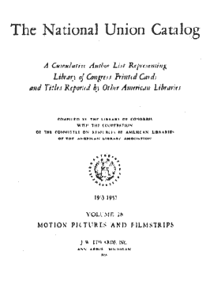

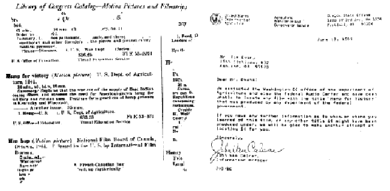
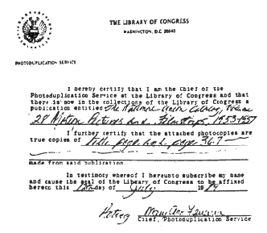
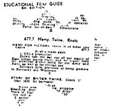
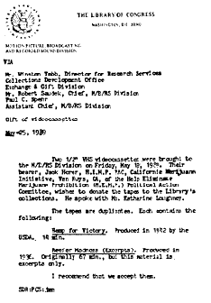
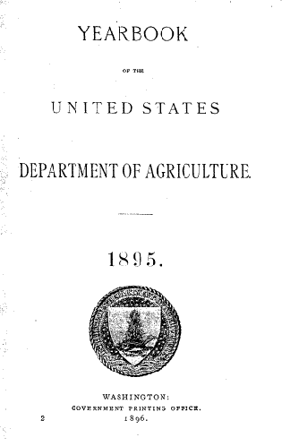
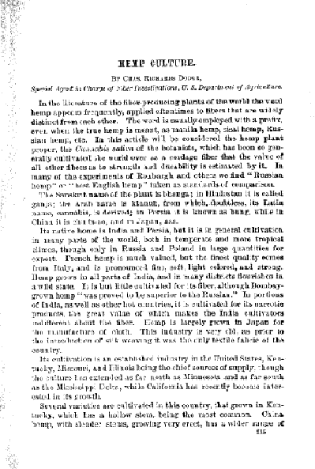
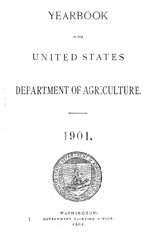
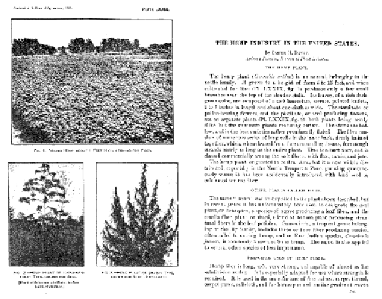
These examples of U.S. Department of Agriculture Yearbooks from 1895, 1901, and 1913 reveal that, for at least 100 years, long before the CIA made its first dope deal with Latin American “drug lords,” our government was a primary pusher of cannabis hemp.
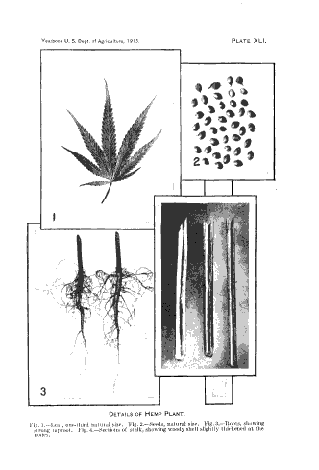
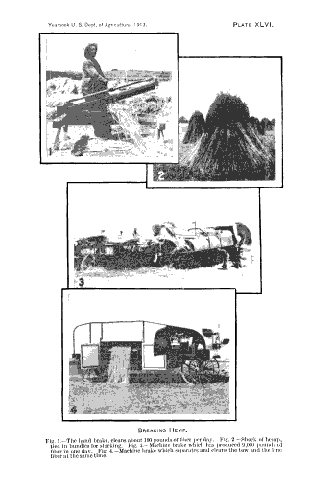
Every American farmer who could be rounded-up in 1943 was compelled to sit through a showing of Hemp for Victory, and then sign a document that they had seen it. After that they were given a copy of this brochure, Farmer’s Bulletin No. 1935: “HEMP.”
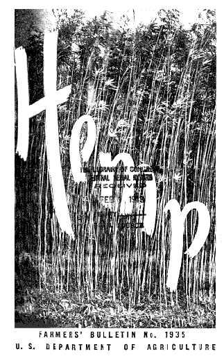
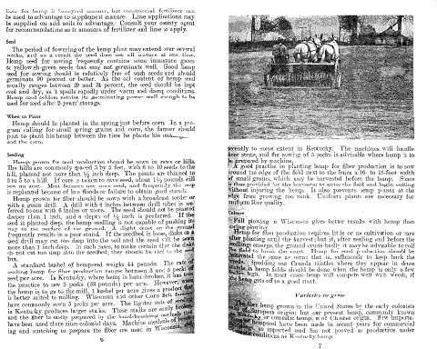
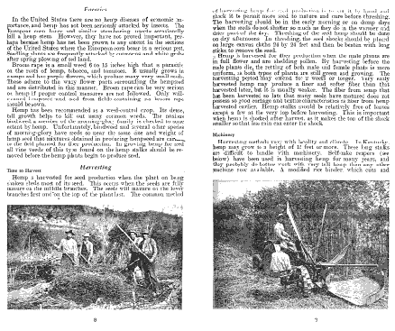
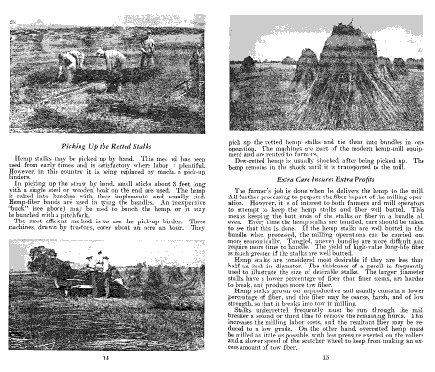
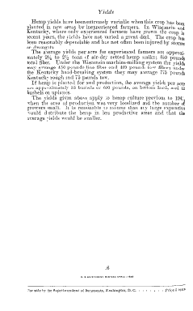
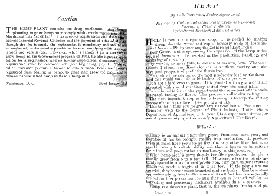
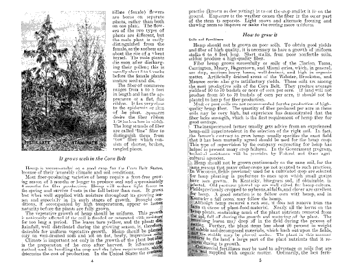
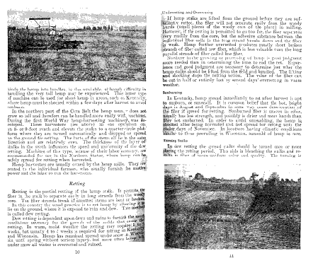
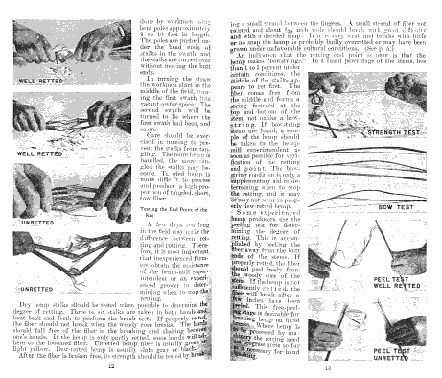
the authorized on-line version of Jack Herer’s “The Emperor Wears No Clothes”
| previous page | Appendix | next page |
|
 |
 |
 |
 |